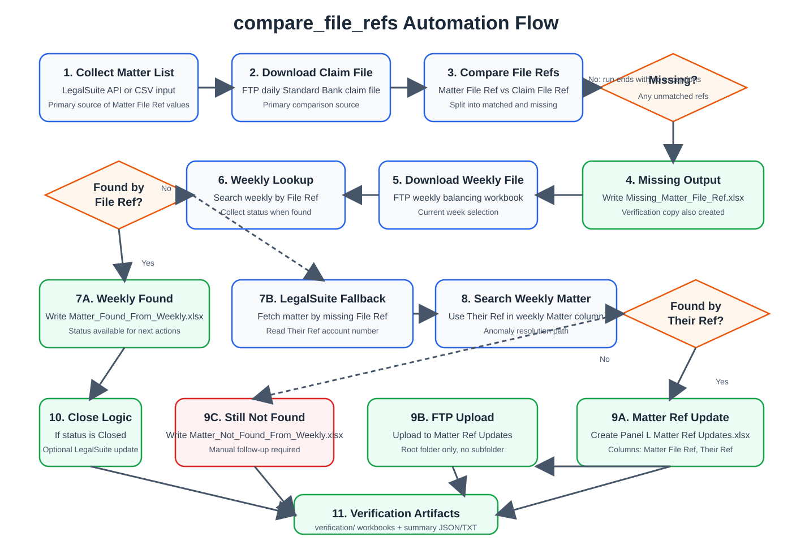

This document describes the compare_file_refs automation at a high level.
It focuses on the business flow, system handoffs, and exception paths rather than code-level implementation.

The automation reconciles LegalSuite matters against Standard Bank source files, identifies exceptions, investigates weekly-balancing anomalies, prepares correction files, and optionally closes matters in LegalSuite when the weekly status supports closure.
| System | Role |
|---|---|
| LegalSuite | Source of matter records, including Matter File Ref, Their Ref, and current matter state. |
| FTP | Source of claim and weekly files, and destination for the matter-ref correction workbook. |
| Claim Amount File | Daily file used for the primary comparison against LegalSuite matter refs. |
| Weekly Balancing File | Operational status source used to resolve missing refs and identify closure actions. |
| Verification Outputs | Audit artifacts showing what the automation concluded and what files were produced. |
Matter File Ref values with claim file File Ref values.File Ref.Their Ref against the weekly Matter column.Closed.If the LegalSuite matter ref exists in the claim file, the record is considered reconciled and no exception action is needed.
If the matter is missing from the claim file but appears in weekly balancing under the same File Ref,
the weekly status is used for downstream handling.
If the matter cannot be found in weekly balancing by File Ref, the automation fetches the LegalSuite matter,
reads Their Ref, and searches the weekly Matter column using that value.
A successful match means the weekly record exists but is carrying the wrong file reference.
The automation then creates Panel L Matter Ref Updates.xlsx with:
Matter File Ref: the correct LegalSuite file refTheir Ref: the account number used to locate the weekly rowMatter Ref Updates itself, not to any subfolder.
If the matter cannot be found in weekly balancing by either File Ref or Their Ref,
it remains unresolved for the run and is written to the not-found output for manual follow-up.
Weekly balancing is treated as the operational status source during exception handling.
Closed.File Ref.Report (SUP).xlsxMissing_Matter_File_Ref.xlsxMatter_Found_From_Weekly.xlsxMatter_Not_Found_From_Weekly.xlsxPanel L Matter Ref Updates.xlsxverification/ copies of generated workbooksverification_summary.jsonverification_summary.txtTheir Ref as the fallback key when File Ref fails.At an abstract level, this automation is an exception-management pipeline: compare by file ref, validate against weekly balancing, resolve anomalies through account number fallback, generate correction files where identifiers are inconsistent, and only update LegalSuite when the weekly status supports that action.